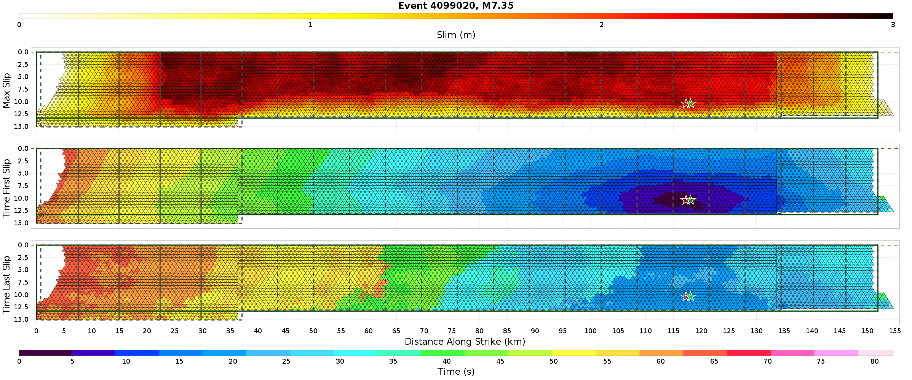
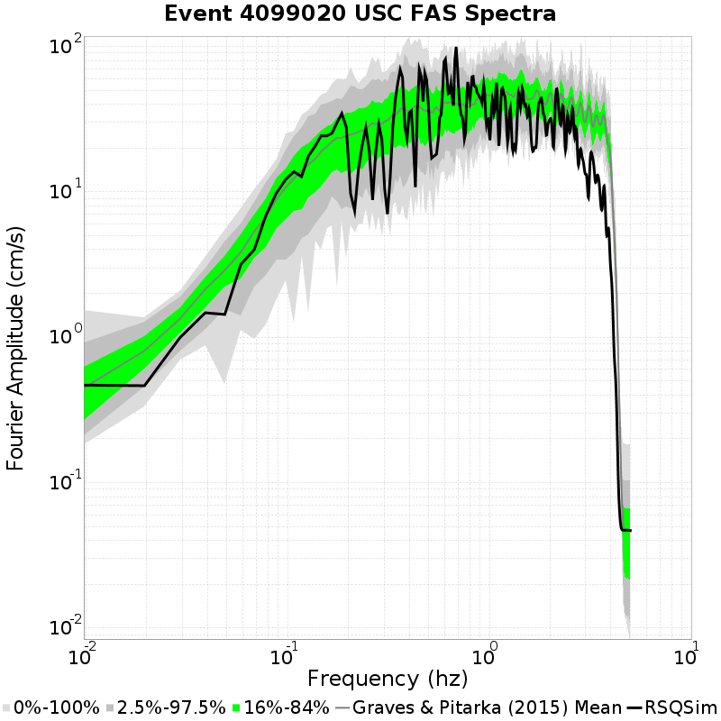
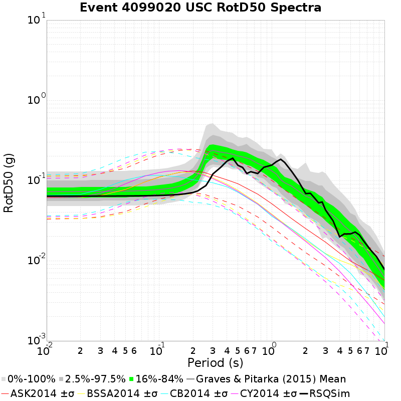
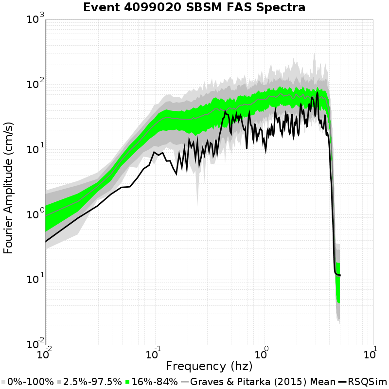
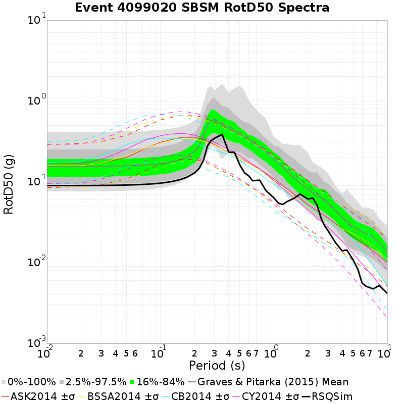

| Catalog | U3 1mil Element Test |
|---|---|
| Author | Jacqui Gilchrist, 2017/09/27 |
| Description | Test 1 million element catalog on UCERF3 fault system, ~0.25 km^2 trianglar elements |
| Fault/Def Model | Fault Model 3.1, Geologic |
| Slim Velocity | 1.0 m/s |
| Average Element Area | 0.23 km^2 |
Legend


Location: 34.0192, -118.286
| Distance | Actual RSQSim Surface | BBP Equivalent Planar Surface | GMPE Surface |
|---|---|---|---|
| Horizontal | 60.07 km | 56.61 km | 60.07 km |
| 3-D | 60.07 km | 56.61 km | 60.07 km |
NOTE: RSQSim ruptures sometimes have a few co-rupturing elements on faults some distance from the main rupture. This may cause discrepancies in the table above, consult rupture map plot.


Location: 34.064987, -117.29201
| Distance | Actual RSQSim Surface | BBP Equivalent Planar Surface | GMPE Surface |
|---|---|---|---|
| Horizontal | 17.50 km | 20.86 km | 20.49 km |
| 3-D | 20.49 km | 20.86 km | 20.49 km |
NOTE: RSQSim ruptures sometimes have a few co-rupturing elements on faults some distance from the main rupture. This may cause discrepancies in the table above, consult rupture map plot.

